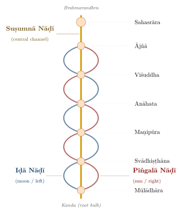
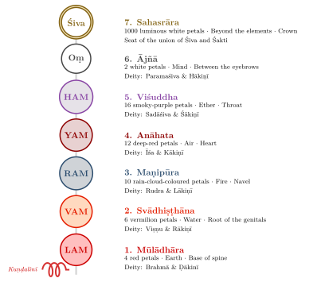
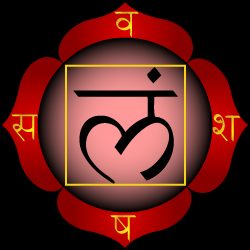
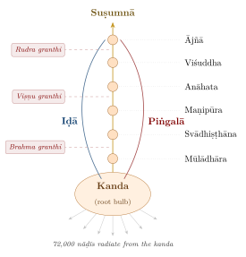

Chapter 6: Kuṇḍalinī, Cakras, and Nāḍīs¶
Haṭha Yoga Pradīpikā 3.1
saśaila-vana-dhātrīṇāṃ yathādhāro'hināyakaḥ
sarveṣāṃ yoga-tantrāṇāṃ tathādhāro hi kuṇḍalī
Just as the serpent-king (Ananta) supports the earth with its mountains and forests,
so Kuṇḍalinī is the support of all Yoga practices.
6.1 The Subtle Body (Sūkṣma Śarīra)¶
The Tantras described in the last chapter located their deities, mantras and powers within the practitioner’s own body, and in doing so they mapped a body of channels, centres and an inner power that the Haṭha texts of the next chapter took over and made the object of physical technique. This chapter describes that “subtle body”. Vedānta and many later Yoga texts place it within a scheme of three bodies (Table 6.1).
| Body | Sanskrit | Description |
|---|---|---|
| Gross Body | Sthūla Śarīra | The physical body made of the five elements |
| Subtle Body | Sūkṣma Śarīra | The energy body comprising prāṇa, nāḍīs, cakras, and the mind |
| Causal Body | Kāraṇa Śarīra | The seed body of latent impressions; the ānandamaya kośa |
Tantric and Haṭha texts describe within the subtle body a network of channels (nāḍīs), centres (cakras), and the dormant power known as kuṇḍalinī. This “subtle body” is best understood as a map used in visualisation and meditation, developed over many centuries and in many versions, rather than as a single fixed anatomy (Samuel and Johnston 2013; White 1996).
6.2 The Nāḍī System¶
The word nāḍī is derived from the Sanskrit root naḍ (to flow). Nāḍīs are the subtle channels through which prāṇa (vital energy) flows throughout the body. They are not identical with the physical nerves or blood vessels but correspond to an energetic anatomy that underlies and interpenetrates the gross body.
The Śiva Saṃhitā gives the number of nāḍīs as 350,000; most other texts give 72,000 (dvāsaptati sahasrāṇi). Of these, fourteen are considered principal, and of the fourteen, three are the most important (Figure 6.1; Table 6.2).

| Nāḍī | Position | Quality | Energy | Characteristics |
|---|---|---|---|---|
| Iḍā | Left of spine | Lunar (candra) | Cooling, calming | Ends at the left nostril; associated with the Gaṅgā |
| Piṅgalā | Right of spine | Solar (sūrya) | Heating, activating | Ends at the right nostril; associated with the Yamunā |
| Suṣumnā | Central (spine) | Neutral (agni) | Spiritual fire | The royal path; kuṇḍalinī rises through it |
The Śāṇḍilya and Darśana Upaniṣads and the Yogayājñavalkya name fourteen principal nāḍīs: besides suṣumnā, iḍā and piṅgalā, they list gāndhārī, hastijihvā, pūṣā, yaśasvinī, alambusā, kuhū, śaṅkhinī, payasvinī, vāruṇī, viśvodarā and sarasvatī. The texts agree that these run to the eyes, ears, mouth, tongue, genitals and anus or pervade the body, but they differ over which channel goes where, so no single table can be given.
6.3 The Seven Cakras¶
The cakras (literally “wheels”) are centres located along the suṣumnā nāḍī, used as supports for visualisation and for the installation of mantras and deities. They are described as lotus-like formations (padma) with varying numbers of petals, each associated with specific syllables, elements and deities. The number of cakras varies between texts: early Buddhist Tantras teach four, many Śaiva texts five, six or more, and some as many as twelve or sixteen. The six-plus-one model presented below became standard only through the Ṣaṭcakranirūpaṇa of Pūrṇānanda (1577) and its English translation by Arthur Avalon (Sir John Woodroffe) in The Serpent Power (1919) (Avalon 1974; Leland 2016) (Figure 6.2).

| Cakra | Petals | Element | Bīja | Lotus colour | Location |
|---|---|---|---|---|---|
| Mūlādhāra | 4 | Pṛthvī (Earth) | LAM | Red | Perineum / base of spine |
| Svādhiṣṭhāna | 6 | Jala (Water) | VAM | Vermilion | Root of the genitals |
| Maṇipūra | 10 | Agni (Fire) | RAM | Rain-cloud (dark blue) | Navel |
| Anāhata | 12 | Vāyu (Air) | YAM | Deep red | Heart |
| Viśuddha | 16 | Ākāśa (Ether) | HAM | Smoky purple | Throat |
| Ājñā | 2 | Manas (Mind) | Oṃ | White | Between eyebrows |
| Sahasrāra | 1000 | Beyond | — | White, luminous | Crown of head |
6.4 Kuṇḍalinī Śakti: The Coiled Serpent Power¶
Kuṇḍalinī literally means “the coiled one.” It is described as a dormant spiritual energy lying coiled like a serpent at the base of the spine, in the Mūlādhāra Cakra. When awakened through yogic practice, kuṇḍalinī rises through the suṣumnā nāḍī, piercing each cakra in succession, until it reaches the Sahasrāra (the thousand-petalled lotus at the crown), where it unites with Śiva — the supreme consciousness. This union is the goal of Kuṇḍalinī Yoga.
HYP 3.2
suptā guru-prasādena yadā jāgarti kuṇḍalī
tadā sarvāṇi padmāni bhidyante granthayo'pi ca
When the sleeping Kuṇḍalinī is awakened by the Guru’s grace, all the lotuses (cakras) and knots (granthis) are pierced.
6.4.1 The Three Granthis (Psychic Knots)¶
Along the suṣumnā, there are three granthis (knots) that obstruct the upward flow of the breath or kuṇḍalinī. In the HYP (4.70–77) their piercing is associated with the heart, the throat and the space between the eyebrows; modern teachers usually place them as in Table 6.4, whose psychological interpretation in the last two columns is modern.
| Granthi | Location | Quality | Nature of Bondage |
|---|---|---|---|
| Brahma Granthi | Mūlādhāra–Svādhiṣṭhāna | Tamas | Attachment to physical pleasures; inertia; lethargy |
| Viṣṇu Granthi | Maṇipūra–Anāhata | Rajas | Attachment to emotional bonds; ambition; power |
| Rudra Granthi | Viśuddha–Ājñā | Sattva | Attachment to siddhis; spiritual pride; subtle ego |
6.4.2 Methods of Awakening Kuṇḍalinī¶
The Haṭha and Tantric texts name several means of awakening kuṇḍalinī. The Haṭha texts rely on breath-control, the locks and the seals, above all the “stimulation of the power” (śakticcālana, HYP 3.104–123); the Tantras on mantras and deities installed in the centres and on fixation of the mind upon them; and the Śaiva traditions on the guru’s grace, the “descent of power” (śaktipāta) at initiation, which the HYP itself echoes when it says that kuṇḍalinī wakes “by the guru’s grace” (3.2). Modern teachers add devotion and self-enquiry as further, spontaneous routes; these are not found in the classical sources.
Health and Safety Note
The texts insist that these practices be learned only from a competent teacher. Intensive breath retention and kuṇḍalinī practices have been associated in clinical reports with anxiety, dissociation and, in vulnerable people, psychotic episodes. People with a history of psychiatric illness, epilepsy, heart disease or high blood pressure, and pregnant women, should not undertake them without medical advice.
6.5 Detailed Description of Each Cakra¶
The following descriptions follow the Ṣaṭcakranirūpaṇa as translated by Avalon (Avalon 1974); the Tantric background of the cakra system is treated in Volume 6, Tantra–Āgama.
6.5.1 Mūlādhāra Cakra (Root Centre)¶
The Mūlādhāra (“root support”) is the foundation cakra, located at the base of the spine between the anus and the genitals. It is depicted as a four-petalled lotus of crimson colour, bearing the Sanskrit syllables va, śa, ṣa, sa. At its centre is a yellow square representing the earth element (pṛthvī tattva), within which is the bīja mantra LAM (Figure 6.3). The deity is Lord Brahmā with the Śakti Ḍākinī.
This is the seat of the sleeping kuṇḍalinī, coiled three and a half times around the svayambhu liṅga.


6.5.2 Svādhiṣṭhāna Cakra (Sacral Centre)¶
The Svādhiṣṭhāna (“one’s own abode”) is located in the sacral region. It is a six-petalled lotus of vermilion colour, bearing the syllables ba, bha, ma, ya, ra, la. At its centre is a white crescent moon representing the water element (jala tattva), with the bīja mantra VAM. The deity is Lord Viṣṇu with Rākiṇī Śakti.
6.5.3 Maṇipūra Cakra (Solar Plexus)¶
The Maṇipūra (“city of jewels”) is located in the navel region. It is a ten-petalled lotus the colour of a rain-cloud, bearing the syllables ḍa through pha. At its centre is a red inverted triangle representing the fire element (agni tattva), with the bīja mantra RAM. The deity is Lord Rudra with Lākiṇī Śakti.
6.5.4 Anāhata Cakra (Heart Centre)¶
The Anāhata (“unstruck sound”) is located in the heart region. It is a twelve-petalled lotus of deep red colour, bearing the syllables ka through ṭha. At its centre is a smoke-coloured hexagonal star (two interlocking triangles) representing the air element (vāyu tattva), with the bīja mantra YAM. The deity is Īśa (Śiva) with Kākiṇī Śakti.
This is considered the seat of the individual Self (jīvātman) and the source of the “unstruck sound” (anāhata nāda).
6.5.5 Viśuddha Cakra (Throat Centre)¶
The Viśuddha (“purification”) is located in the throat region. It is a sixteen-petalled lotus of smoky purple colour, bearing all sixteen Sanskrit vowels. At its centre is a white circle representing the ether element (ākāśa tattva), with the bīja mantra HAM. The deity is Sadāśiva with Śākiṇī Śakti.
6.5.6 Ājñā Cakra (Command Centre)¶
The Ājñā (“command”) is located between the eyebrows. It is a two-petalled lotus of white colour, bearing the syllables ha and kṣa. It is the seat of the Guru’s command and the centre of intuitive knowledge. The bīja mantra is Oṃ. The deity is Paramāśiva with Hākiṇī Śakti.
This is the point where Iḍā, Piṅgalā, and Suṣumnā converge — the triveni (triple confluence), analogous to the sacred confluence at Prayāga.
6.5.7 Sahasrāra (The Thousand-Petalled Lotus)¶
The Sahasrāra (“thousand”) is not technically a cakra but the ultimate destination — the abode of Śiva-consciousness at the crown of the head. It is described as a luminous lotus of a thousand petals, containing all the letters of the Sanskrit alphabet repeated twenty times. Here, Kuṇḍalinī Śakti unites with Śiva, and the yogi experiences the supreme bliss of non-dual awareness.
6.6 The Process of Kuṇḍalinī Awakening¶
The journey of kuṇḍalinī from Mūlādhāra to Sahasrāra is described as a progressive dissolution (laya) of the elements — earth into water, water into fire, fire into air, air into ether, ether into mind and mind into pure consciousness — so that the yogin’s ascent reverses the order in which the world came into being (Chapter 10). Modern teachers attach a sequence of experiences to the ascent, from heat at the base of the spine through inner sounds at the heart to non-dual awareness at the crown; these descriptions are modern, and the texts themselves concentrate on the dissolution of the elements and on the union of Śakti with Śiva.
6.7 The Textual Sources of Kuṇḍalinī and Cakra Doctrines¶
The doctrines of kuṇḍalinī, cakras, and nāḍīs are found across a wide range of Yoga and Tantra texts spanning more than a millennium. While modern practitioners often treat the cakra system as a single, unified model, the textual sources actually present considerable variation in the number, names, and characteristics of the cakras (Table 6.5).
| Text | Cakras | Key Features |
|---|---|---|
| Hevajra Tantra (c. 9th–10th c.) | 4 | Buddhist Tantra; cakras at navel, heart, throat and head (Volume 4) |
| Kubjikāmata Tantra (c. 10th c.) | 6 | Early Śākta source; identifies cakras with goddesses |
| Vivekamārtaṇḍa / Gorakṣaśataka (13th–14th c.) | 6 | Early Nātha texts; six cakras with sixteen supports (ādhāra) |
| Haṭha Yoga Pradīpikā (c. 1450) | Variable | Emphasises granthis and kuṇḍalinī awakening; little on individual cakras |
| Śiva Saṃhitā (c. 15th c.) | 6 + 1 | Describes lotus petals and the fruits of meditating on each |
| Ṣaṭcakranirūpaṇa (1577) | 6 + 1 | The model that became standard; detailed petal syllables, deities, elements; source of Avalon’s description |
Scholarly Note
The “standard” seven-cakra model that dominates modern Yoga derives primarily from the Ṣaṭcakranirūpaṇa (“Description of the Six Centres”), written in 1577 by Pūrṇānanda as part of a larger work, which was translated into English by Sir John Woodroffe (Arthur Avalon) in The Serpent Power (1919). This translation was enormously influential in shaping the Western understanding of the cakra system, though it represents only one of several traditional models. Much of what is now popularly attached to the cakras — rainbow colours, glands, personality types — was added later by Theosophical and New Age writers (Leland 2016).
6.8 The Physiology of the Subtle Body: Kanda and the Origin of Nāḍīs¶
The kanda (literally “bulb” or “root”) is described as the origin point from which all 72,000 (or 350,000) nāḍīs emanate. The early Gorakṣa texts place it between the genitals and the navel, shaped like a bird’s egg; the HYP (3.113) describes it as soft and white, about four finger-breadths (aṅgula) wide. Its location and dimensions vary from text to text.
The relationship between the kanda, the three principal nāḍīs, and the cakras can be pictured as in Figure 6.4.

6.9 The Psychology of the Cakras¶
In the 20th century the cakras were reinterpreted as a map of human psychological development. C.G. Jung discussed them in his 1932 seminar on Kuṇḍalinī Yoga as symbols of the stages of individuation; Swāmī Satyānanda Sarasvatī’s manuals gave each centre a psychological character; and Anodea Judith’s Wheels of Life (1987) set out the now familiar scheme in which each cakra governs a “need” — survival, pleasure, power, love, expression, insight and transcendence — with a healthy and an “imbalanced” state (Judith 1987; Leland 2016). These mappings, like the rainbow colours and the endocrine glands discussed below, are modern extensions with no basis in the Sanskrit sources, whose concern is the soteriological use of the centres in visualisation and ritual.
6.10 Signs and Symptoms of Kuṇḍalinī Awakening¶
Haṭha texts (for example HYP 4.69–76) describe inner sounds, heat and bliss as the breath enters the central channel (Chapter 10). Modern teachers have added many further signs: heat rising along the spine, involuntary movements (kriyās) and trembling, inner lights and visions — Swāmī Muktānanda’s “blue pearl” is a well-known example — waves of bliss, weeping or laughter, and sudden intuitions. Distinguishing such experiences from medical or psychiatric conditions requires care (see the safety note above).
6.11 Kuṇḍalinī and Modern Science¶
Popular books often present a table matching each cakra with a nerve plexus and an endocrine gland (for example mūlādhāra with the adrenals, anāhata with the thymus, ājñā with the pituitary and sahasrāra with the pineal). This correspondence is not found in any Sanskrit text. The identification of cakras with nerve plexuses was proposed in the early 20th century, notably by Vasant Rele in The Mysterious Kundalini (1927); the link with endocrine glands comes from Theosophical writers such as C.W. Leadbeater and was elaborated in later New Age literature (Rele 1927; Leadbeater 1927; Leland 2016). There is no anatomical or physiological evidence for these mappings, and the assignments differ from author to author.
Key Point: The Status of the Subtle Body
The cakras and nāḍīs belong to the subtle body (sūkṣma śarīra), a model used for meditation and ritual, not a description of gross anatomy; the texts themselves vary widely in describing it. Claims that cakras have been “measured” by EEG, fMRI, Kirlian photography or “biofield” instruments are not supported by credible evidence.
6.12 The Minor Cakras and Additional Energy Centres¶
Beyond the seven major cakras, the Yoga and Tantra traditions describe several additional energy centres of significance (Table 6.6).
| Cakra | Location | Significance |
|---|---|---|
| Bindu Visarga | Back of the head | Source of amṛta (nectar); the “moon centre” from which the nectar drips |
| Lalanā | Palate (behind uvula) | Receives the nectar from Bindu; related to Khecarī Mudrā |
| Manas Cakra | Above Ājñā | Centre of the sensory mind; six petals corresponding to the five senses and mind |
| Soma Cakra | Above Manas | Centre of the “moon” (soma); sixteen petals; source of cooling energy |
| Hṛdaya (Spiritual Heart) | Right side of chest | Seat of the Self according to Rāmaṇa Maharṣi; distinct from Anāhata |
| Talu Cakra | Roof of the mouth | Connected to the flow of amṛta; activated by Khecarī Mudrā |